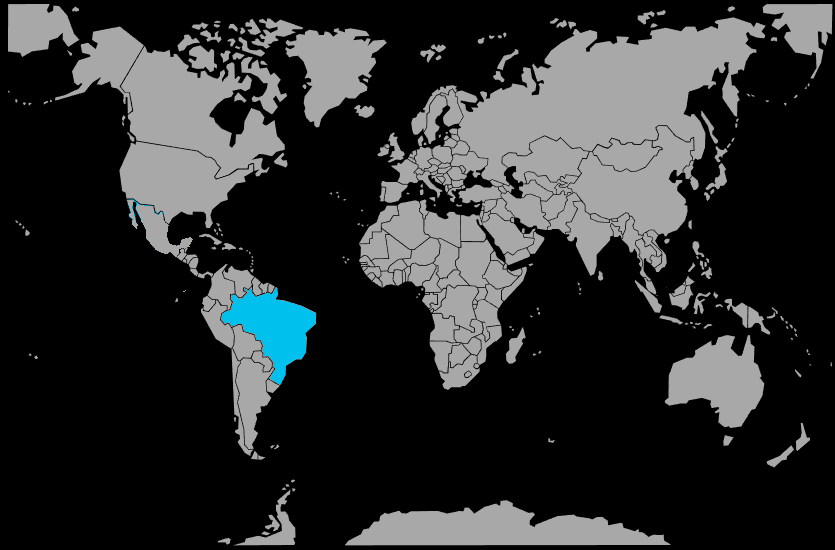

Systématique
- Ordre : Cichliformes
- Famille : Cichlidae
- Genre : Ivanacara
- Espèce : Ivanacara adoketa
Ivanacara adoketa est un cichlidé nain sud‑américain au patron zébré très contrasté, recherché pour les bacs d’eau noire et les aquariums de biotope amazonien.
Le mâle atteint environ 8 à 9 cm, la femelle restant plus petite, et l’espèce préfère les aquariums calmes avec un éclairage tamisé et de nombreuses cachettes.
Ivanacara adoketa a un tempérament plutôt réservé mais peut se montrer territorial, surtout en période de reproduction; il est recommandé de le maintenir en couple ou petit groupe spécifique.
En communautaire, il doit être associé à des espèces paisibles de petite taille occupant d’autres zones de nage, car il peut être dominé par des poissons trop vifs ou agressifs.
Mode : pondeur sur substrat, souvent en cavité; le couple nettoie une pierre ou l’intérieur d’une cachette, où la femelle dépose les œufs ensuite gardés par les deux parents.
Pour obtenir une bonne éclosion, une eau très douce et acide est indispensable; les parents surveillent les larves puis les alevins en nuage serré autour du site de ponte.
Dimorphisme sexuel : les mâles sont plus grands, avec des nageoires dorsale et anale plus allongées; les femelles arborent souvent un ventre plus arrondi et une coloration différente en période de ponte.
Espérance de vie : en aquarium bien tenu, Ivanacara adoketa peut vivre 5 à 8 ans, selon la qualité de l’eau et de la nourriture.
L’espèce habite des petits cours d’eau forestiers et affluents mineurs du bassin de l’Amazone, à eau noire, très douce et acide, avec un substrat couvert de feuilles, de branches et de racines.
Répartition
Origine naturelle :
- Bassin du Rio Negro et affluents d’eau noire en Amazonie.
- Petits ruisseaux forestiers et zones inondées en saison des pluies.
L’espèce est associée aux forêts tropicales denses, où la lumière atteint peu la surface de l’eau et où la litière de feuilles est abondante.
Paramètres de maintenance
Température : 23 à 27 °C.
pH : 4,0 à 6,0, eau nettement acide, surtout pour la reproduction.
GH : 0 à 5 °dGH, eau très douce.
Courant : faible, avec une filtration douce et l’utilisation fréquente de feuilles, racines et fruits de catappa pour recréer l’eau noire.
Volume conseillé : au minimum 120 L pour un couple, avec de nombreuses cachettes (racines, noix de coco, pierres).
Régime alimentaire
Régime : carnivore micro‑prédateur; il se nourrit surtout de petits crustacés, larves d’insectes et autres invertébrés aquatiques.
En captivité, il apprécie les nourritures vivantes et congelées (artémias, daphnies, vers), et accepte progressivement les granulés fins de bonne qualité.
Des repas variés et riches en proies vivantes favorisent une belle coloration, une bonne santé et une reproduction régulière.